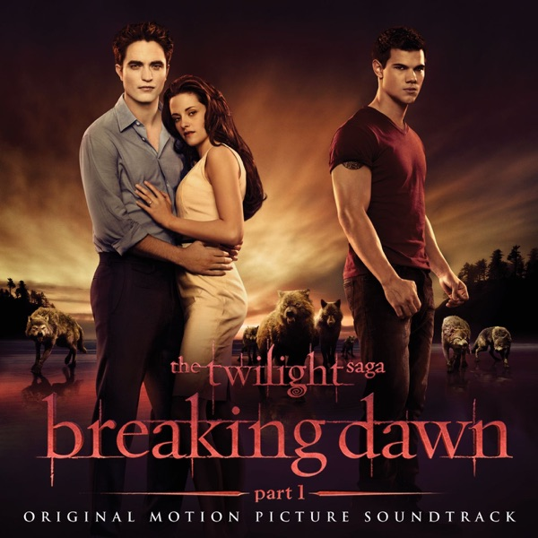

팝송으로 마스터하는 핵심 영문법
현재완료 시제, 관계대명사 that, 부사절 접속사 등 일상 회화에서 감정을 깊이 있게 표현할 때 꼭 필요한 필수 구문들이 가득합니다.

주어와 동사의 수일치, to부정사, 지각동사 등 문장을 길게 이어주는 필수적인 영어 구조가 아름다운 가사에 담겨 있습니다.
이 가사는 노래의 핵심적인 감정을 담고 있다고 느꼈습니다. "우리가 함께가 아니라면 우린 뭐가 될까?"라는 문장에서 불안과 걱정이 담겼다고 생각하고 동시에 "영원한 것은 없다"는 것에서 차가운 현실을 표현했다고 생각하여 이 문장을 선정하였습니다.